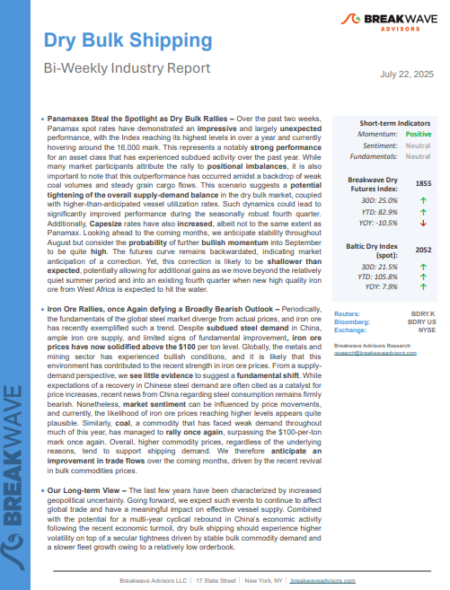
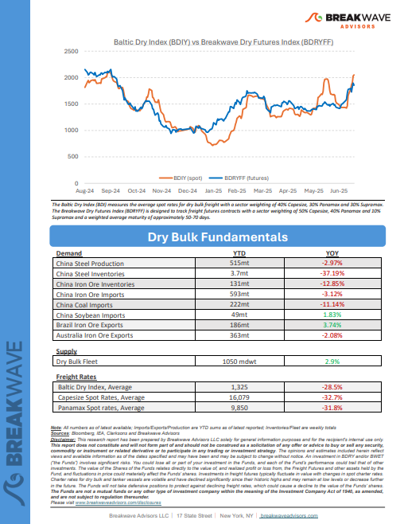

As the week comes to a close, take a moment to review the key insights from the past few days. Missed something? We've gathered all the top insights for you to catch up at your convenience.
Panamaxes Steal the Spotlight as Dry Bulk Rallies– Over the past two weeks, Panamax spot rates have demonstrated animpressiveand largelyunexpectedperformance, with the Index reaching its highest levels in over a year and currently hovering around the 16,000 mark.


In 2002, an electronics shop on a dusty street in Hangzhou stood as a quiet witness to China’s accelerating transformation.
Doric Weekly Market Insights
As we discussed in Commodore Research's most recent Weekly China Report, China’s crude oil imports increased on a year-on-year basis by 8% in June.
From Commodore's Weekly Dry Bulk Reports
In the past decade, oil demand has been defined by rapid growth in the Chinese economy, with the country responsible for 60% of global growth.
Gibson Tanker Market Report
Despite rising U.S. inflation and heightened trade tensions, markets remain stable—perhaps too stable.
Forvis Mazars Weekly Note
China’s property sector remains entrenched in a deep correction in 2025, with no signs of near-term stabilization.
Vortexa Freight Weekly
Allied Quantumsea’s latest research reviews how China’s shifting commodity demand, from coal to bauxite and high-grade iron ore, is elevating Africa’s role in dry bulk trade, with Guinea and South Africa at the center of the supply chain realignment.
Allied Weekly Report
This week’s Chart Monitor highlights a continued upward trend in Brazilian iron ore shipments. Since the end of Q1, each month's closing volume has exceeded levels seen in previous years.
Signal Ocean Dry Weekly Market Monitor
As we discussed for clients in Commodore Research's most recent Weekly China Report, China’s retail sales in June grew year-on-year by 4.8% which has marked the lowest growth seen since February.
From Commodore's Weekly Dry Bulk Reports
Energy and metal markets struggled for direction amid conflicting supply side issues. A resilient US labour market weighed on sentiment in the gold market.
Commodities Wrap